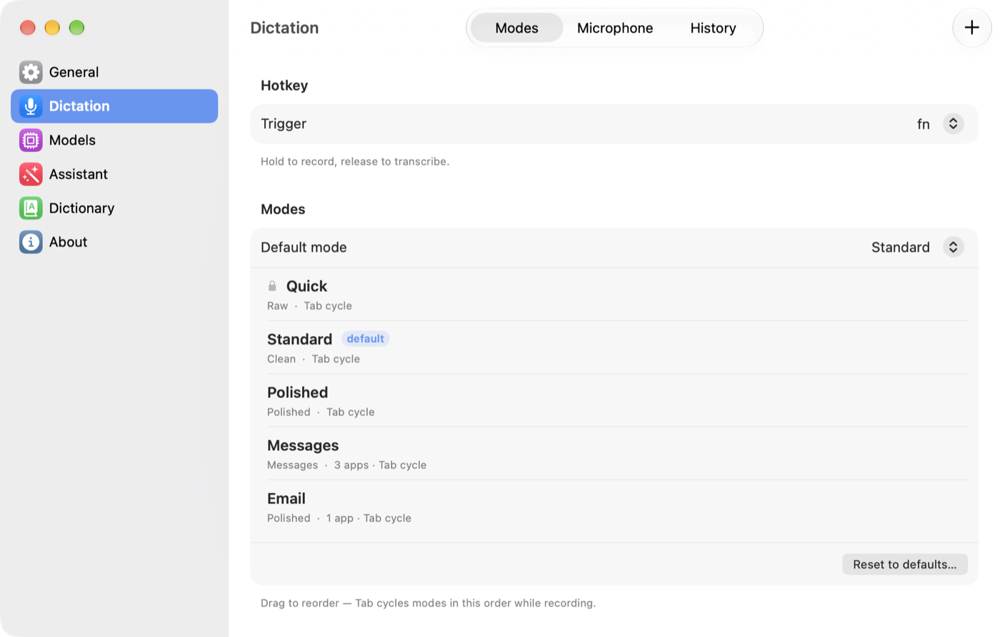
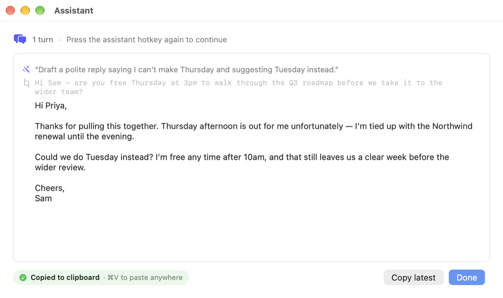
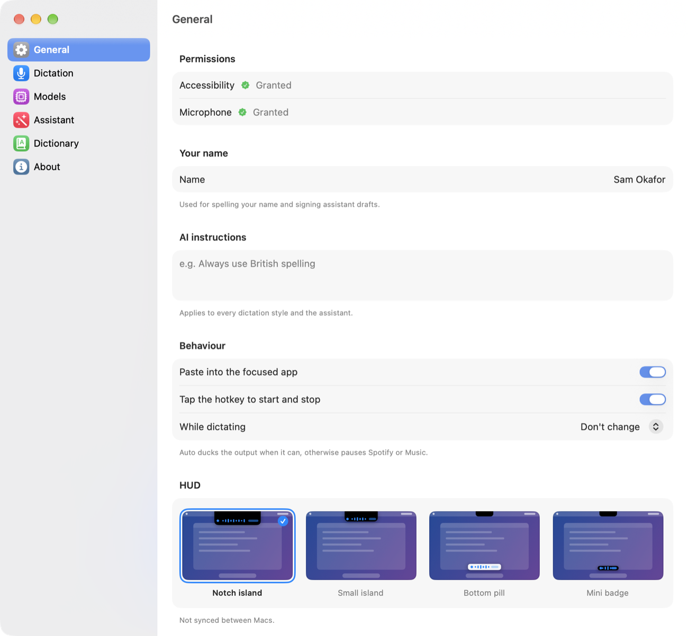
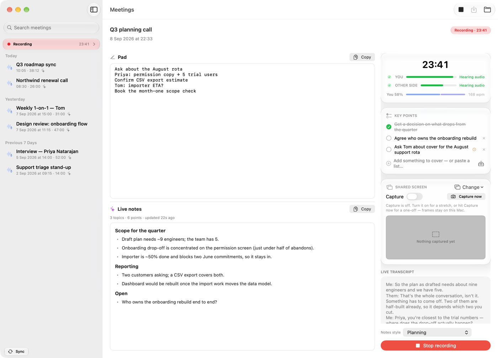
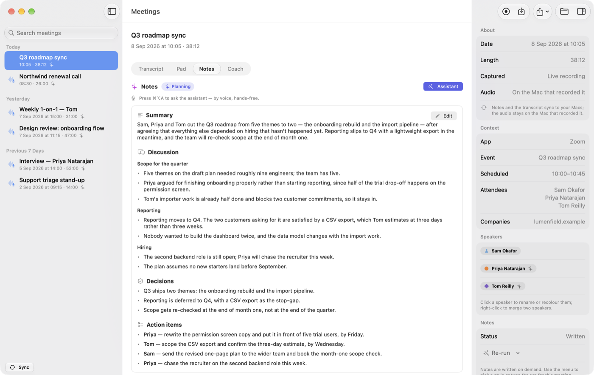
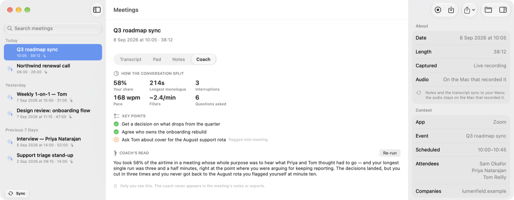
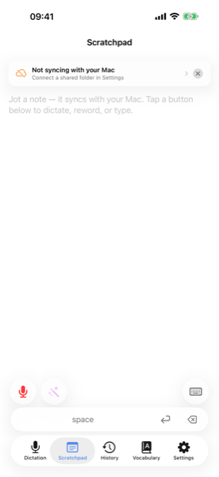

Talk to your Mac.
Not the cloud.
Hold a key, say what you mean, let go. The words land where your cursor is — punctuated, tidied, and spelled the way the rest of your document spells things. Speech and language models run on your Mac. Free, open source, no account.
Latest macOS release: v2026.9.2 · All releases
- Nothing leaves your Mac
- Any text field, any app
- Spoken punctuation & emoji
- Fillers dropped
- Paragraphs, not a wall of text
- A style per app
- Edit text by talking to it
- Free & open source
Active development. Things may still be rough in spots, and some behaviour will change between versions. Feedback (bugs, papercuts, "this should do X") is genuinely welcome at hello@robgough.net.
The small stuff
Getting the words right is the easy half. The annoying half is everything around them — the "um"s, the literal word "comma", the stray capital in the middle of a sentence, the wall of text.
Here's the list of things you'd otherwise spend the rest of your life fixing by hand.
- Punctuation
- "comma" → , · "new paragraph" → a blank line · "open quote"…"close quote" → “ ” · "em dash" → —
- Emoji
- "fire emoji" → 🔥 · "thumbs up emoji" → 👍 — every standard emoji by name, around 3,700 of them
- Times
- "ten thirty AM" → 10:30am · "sixteen hundred hours" → 1600 hours
- Money
- "five dollars" → $5 · "twenty euros" → €20 · "sixteen hundred pounds" → £1600
- Numbers
- "twenty thousand and sixty two" → 20062 · "four four seven seven seven" → 44777 · but "four times a day" stays in words, because that's how you'd write it
All five families are independent switches, so you can keep punctuation and turn emoji off. They're deterministic — no model involved — so they work even with every AI pass disabled.
The "um"s go
Every style except Raw drops "um", "uh", "er" and "erm" on the way past. Words that carry actual meaning or voice — "yeah", "okay", "so" — stay, unless you've asked for the more aggressive Polished style.
A question stays a question
Dictate "why is the build failing?" into a document and a naive cleanup model will helpfully try to answer you. Question-shaped dictation skips the rewrite entirely, and the prompts are walled off from acting on instructions found in your speech — "tell me a joke" gets punctuated, not performed.
Chat casing, in chat
A two-word Slack reply shouldn't arrive as "Ok." — nobody types that. In the Messages style, six words or fewer keep their casual casing and lose the trailing full stop. "I" keeps its capital, obviously.
No phantom leading space
Empty compose boxes in Signal and in Firefox's web editors expose their greyed-out "Message" placeholder as if it were real text, so a naive dictation tool lands with a stray space in front of it. Dictator checks three separate signals before deciding there's anything before your cursor.
Lands mid-sentence properly
Dictating into the middle of a line adds a leading space only if the words would otherwise glue onto the previous one, drops the automatic capital and the trailing full stop when you're continuing a sentence, and never doubles a space that was already there.
Names spelled your way
Dictator reads a little of the text around your cursor and hands the distinctive names and terms to the model, so "Siobhán" comes back with her accent on, even though speech recognition dropped it. Nothing read this way is stored or transcribed.
A ramble becomes paragraphs
Past roughly 60 words you get paragraph breaks. The model is only allowed to reply with the sentence numbers that should start a new paragraph, so applying it is a pure whitespace edit — it is structurally impossible for a word to change. Very long dictations are handled in chunks so the ending doesn't get quietly summarised.
A safety net when it goes wrong
Every AI pass is checked afterwards: enough of your original words have to survive, and the text isn't allowed to balloon. If a pass fails the check it's thrown away, the earlier version is used, and the HUD tells you it happened. Nothing gets silently rewritten into something you didn't say.
Words it always mishears
Your own dictionary handles the names, jargon and the words your accent trips over. There's a mic button in Settings, so you can just say the word it keeps getting wrong and let it fill in the "Heard" side for you.
Cues, even with no AI at all
Punctuation, numbers, times, currency, emoji and your dictionary are plain deterministic text replacement. Turn the language model off completely and all of it still works.
Styles & modes
One cleanup level can't serve both a text to your partner and an email to a client. Pick how much the AI is allowed to touch — per app, if you like.
A style decides the shape of the output. A mode pairs a style with its own extra instructions, its own spoken-cue switches, and a list of apps it should switch itself on for.
Raw
No model at all. Spoken cues and your dictionary still apply, so it isn't literally unprocessed — it's the fastest path from speech to text, and the one to use for languages the cleanup models handle poorly.
Say"let's ship it friday comma before the demo"
Getlet's ship it friday, before the demo
Clean
Punctuation, capitals, fillers gone. Every content word is kept — nothing paraphrased, nothing reordered. A couple of unambiguous typos (a missing apostrophe, "the the") get fixed.
Say"um so we should probably ship this on friday i think before the demo"
GetSo we should probably ship this on Friday, I think, before the demo.
Polished
Clean's rules, plus discourse fillers ("you know", "kind of"), false starts corrected, and wordiness tightened. Reads as written English rather than a transcript. One pass, not two, so it isn't slower.
Say"we need three — sorry, four people, and, you know, due to the fact that the demo is friday"
GetWe need four people, and because the demo is on Friday…
Messages
Built for chat. Never adds a greeting or a sign-off you didn't say. "lol", "ok", "omg" and "idk" survive exactly as spoken. A single short sentence gets no full stop — a "?" or "!" is kept.
Say"yeah ok sounds good"
Getyeah ok sounds good
Custom drops the built-in styles and runs a prompt you write yourself. Every built-in style shares one set of prompts, so improvements reach every mode using it — and a mode's Extra instructions box layers your own tweak on top without forking the whole thing. "Always use British spelling" is one line, and it survives every future update.
Modes can auto-activate for the app you're in: a Messages mode bound to Slack and Signal, a Polished mode bound to Mail. Or cycle mid-recording with a key (Tab by default) — start in Polished, realise halfway through it should have been Raw, tap once and the rest of the recording switches.

Assistant mode
A second hotkey for editing text by talking to it. Select something, say what you want done, let go.
If you had text selected, Dictator sees both the selection and your instruction, and works out which of these you meant.
Replace
"Tighten this." "Translate to French." "Fix the comma splice." The selection is replaced in place — and re-selected afterwards, so you can carry straight on with "now make it shorter" without touching the mouse.
Draft
"Reply to this with a polite no." "Summarise these notes." The result goes to the clipboard, or a small floating window you can read and copy from — never over the top of something you didn't mean to overwrite.
It remembers
Say "remember that I always sign off Cheers, Rob" and it does — from then on. Memory is a plain assistant-memory.md file in your synced folder, so you can read it, edit it, or delete a line you'd rather it forgot. One switch turns it off.
It knows what day it is
"Draft a note for next Friday" resolves to the actual date. Small thing; the first time a model gets it wrong you notice.
It has a personality — and it's yours
Warm, direct and dry by default, and fully editable in Settings. It shapes drafts and small talk, but never leaks into your own text when it's rewriting it.
Conversations, not one-shots
Follow-ups extend the same thread, with automatic compaction when the model's context fills up. Recent conversations are one click away in the menu bar.

Fits how you work
The details that decide whether you actually use a dictation app twenty times a day, or twice.
Hold it, or tap it
Hold the key past a third of a second and it's classic push-to-talk. A quick tap latches on instead, so a five-minute dictation doesn't mean five minutes of holding a key down. Tap again to stop.
Esc cancels — and stops there
Hitting Esc to bail out of a dictation used to also close the popover or find bar in the app behind it. Now it's swallowed while the dictation is still cancellable, and passed through the rest of the time.
Four HUDs, pick your monitor
A notch island that merges into the MacBook notch, a smaller version, a pill at the bottom, or a mini badge. The bottom ones exist because on a tall external display the island sits somewhere you're not looking. A live preview of the transcript runs in the HUD as you speak.
Sounds you can live with
Five sets — Classic, Glass, Soft, Wood, Minimal — each with a play button so you can audition them without recording anything. A tap on press, a rising pair when the mic goes live, a chord when the text lands.
History that shows the work
"What did the AI actually change?" is answerable: history keeps every stage a dictation went through, labelled with the pass and the style that produced it — not just the final output.
Follows you between Macs
Modes, prompts, hotkeys, dictionary, recent dictations and assistant threads live in ~/Documents/Dictator/. If that folder is in iCloud Drive or Dropbox they're on your other Mac too. Model choices stay per-machine, because a 16 GB Air and a 64 GB Studio want different answers.
Actually offline
Once the models are on disk the network is irrelevant — no quiet re-validation call on every load, no "checking for updates" before it'll let you speak. It works on a plane and on hotel wifi that's pretending to work.
Updates without an App Store
In-app update checks against a signed feed. No review queue between a fix and you having it.

Scratchpad
A blank note, one keystroke away. Press ⌥X and a plain-text pad slides in from the edge of the screen; press it again, hit Esc, or click away and it slides back out.
It's for the thought you need down now — a phone number, a half-formed idea, something pasted out of a call — without hunting for a window or deciding where to file it. The pad floats above everything, follows you between Spaces, and takes your typing without pulling focus from the app underneath, so you don't lose your place. You can dictate straight into it.

There's one pad, kept as scratchpad.md alongside your other settings, so the note you started on the laptop is there on the desktop. Four widths (Small, Medium, Large, Extra large), and the shortcut, width and an on/off switch live in Settings → General.
Choose your models
Two speech engines, and either Apple's on-device model or one of six local LLMs for the cleanup — or no LLM at all.
Weights download on first use and live in ~/Library/Application Support/Dictator/Models/. Mix and match freely.
Speech-to-text
| Model | Disk | RAM | Notes |
|---|---|---|---|
| Parakeet TDT v3 (multilingual) | 475 MB | ~700 MB | Default. Apple Neural Engine, ~60–70× realtime. 25 European languages. |
| Parakeet TDT v2 (English) | 475 MB | ~700 MB | Slightly better English accuracy than v3. |
| Whisper Tiny (English) | 75 MB | ~150 MB | Fastest, lowest accuracy. |
| Whisper Base (English) | 140 MB | ~250 MB | Good balance for short utterances. |
| Whisper Small (English) | 470 MB | ~700 MB | Solid accuracy. The default if you switch to Whisper. |
| Whisper Large v3 Turbo | 1.5 GB | ~2 GB | Best quality, around 100 languages. |
Language model — the cleanup passes and Assistant mode
With Apple Intelligence enabled, Dictator uses Apple's on-device foundation model: nothing extra to download, and effectively no in-process RAM cost because the system already has it loaded. The MLX models below are the alternative if you'd rather choose your own, or aren't using Apple Intelligence.
16 GB Minimum
Default is Llama 3.2 1B. The 3B works too if Dictator is the only memory-hungry thing open.
24 GB Recommended
Default is Llama 3.2 3B, with room left for everything else you'd have open. Gemma 4 E2B also fits.
32 GB+ Generous
Gemma 4 E4B — the best Dictator offers — or Qwen 2.5 7B, with no swap pressure.
| Model | Disk | RAM | Min Mac RAM | Notes |
|---|---|---|---|---|
| Llama 3.2 1B (4-bit) | 760 MB | ~1.5 GB | 16 GB | Snappy. Decent formatting, weaker on assistant work. |
| Llama 3.2 3B (4-bit) | 1.9 GB | ~2.5 GB | 24 GB | Good balance of quality and speed. |
| Qwen 2.5 3B (4-bit) | 1.8 GB | ~2.5 GB | 24 GB | Alternative 3B with a different prose style. |
| Qwen 2.5 7B (4-bit) | 4.4 GB | ~5–6 GB | 32 GB | Higher quality, noticeably slower. |
| Gemma 4 E2B (QAT 4-bit) | 4.4 GB | ~4 GB | 24 GB | Gemini 3 lineage. Runs lighter than the download size suggests. |
| Gemma 4 E4B (QAT MXFP4) | 6.7 GB | ~6 GB | 32 GB | Best quality on offer. Also what Dictator Meetings recommends. |
| None | — | — | — | No LLM passes at all. Cues and your dictionary still apply. |
RAM is what the loaded model costs at steady state; long assistant conversations grow beyond it as the context fills. Min Mac RAM is how much memory your whole machine wants before we'd recommend that model. The first-run wizard picks a default that fits your Mac, and if you override it the picker shows a Fits / Tight / Too large chip per row.
Local-first, honestly
Running everything on your Mac is a real trade-off. Worth being clear about both sides.
What you get
- Privacy. Audio, transcripts, prompts and conversation history never leave the device. No telemetry, no analytics, no account.
- Cost. Free after the model downloads. No subscription, no API key, no per-token billing.
- Offline. Works on a plane, in a hotel, on a train through a tunnel.
- Predictable. Nobody can deprecate the model out from under you or change its behaviour overnight.
- Inspectable. Open source, so you can see what runs, when, and on what.
What you give up
- RAM. With Apple's foundation model doing the LLM work, any Apple Intelligence–capable Mac is fine. With an MLX model instead: 16 GB minimum, 24 GB+ for the 3B, more above that.
- Speed. A small local model takes a second or two per pass. A frontier cloud model has orders of magnitude more compute behind it.
- Ceiling. Apple's model and a small MLX model — even Gemma 4 E4B — are not Claude. For dictation cleanup they're plenty; for genuinely hard text work the frontier still wins.
- First run. The speech model (~500 MB) downloads on first dictation. An MLX language model is another 0.8–6.7 GB on top.
- Heat. Sustained inference uses the GPU and Neural Engine. Your Mac will get warm under heavy use.
Be in the meeting.
Not taking notes.
Records both sides of a call, works out who said what, and writes the notes — on your Mac. No bot joins the call, nothing is uploaded, and the notes come out as Markdown files you own.
Latest release: v2026.9.1 · All releases
- No headphones needed
- Speakers named, and remembered
- Notes while you're still talking
- Templates per meeting type
- A coach only you see
- Plain Markdown files
- Free & open source
Its own app, its own updates. Meetings used to live inside Dictator; it's now a separate download with its own release channel. It works on its own — and if Dictator is running, Meetings borrows the model it already has loaded rather than holding a second copy in memory. Feedback welcome at hello@robgough.net.
What it does
Press record before the call. Everything below happens without you thinking about it again.
Both sides, no headphones
Your mic on one track, the call's own audio on the other — Zoom, Meet, Teams, FaceTime, a browser tab, it doesn't matter which. Most recorders make you wear headphones so the other person's voice doesn't bleed into your mic; here the leak is measured (its actual delay and loudness) and cancelled from the audio, and anything that still slips through is dropped afterwards by comparing voice identity between the two tracks. On headphones it switches itself off — there's nothing to cancel.
The two tracks line up
Mic and call recordings rarely start at the same instant. They're time-aligned before merging, so you don't get the same sentence twice or a line handed to the wrong person.
Who said what — with names
Speakers are separated on-device, then "Speaker 1" is replaced with a real name when someone is introduced or addressed ("thanks, Rory"). A guessed name carries a small sparkle so you can spot it and correct it; a name you typed yourself is never overwritten.
It remembers voices
Once someone has a name, that voice is remembered on your Mac and they're named automatically next time. A People editor lists everyone stored, merges duplicates, and forgets anyone — voice included — when you ask.
The calendar fills in the rest
With calendar access (asked once, and optional), a matched event names the meeting properly instead of guessing from the transcript, and fills in attendees, companies and times. The scheduled finish is also what lets the coach nudge you when you're wrapping up with key points still open.
Notes now, and notes after
A rough pass of the notes builds while you're still on the call, so you can glance at what's been agreed without leaving the conversation — and it corrects itself mid-call if a decision reverses or a number is restated. When the call ends, the full notes are written fresh from the cleaned-up transcript.
A template per meeting type
A stand-up and a job interview don't want the same sections — so an interview gets Company, Candidate, Open questions and Quotes, while a 1-on-1 doesn't. Built-in styles cover 1-on-1s, stand-ups, retros, client calls, brainstorms, interviews and podcasts; write your own with plain headings, or let Auto-detect pick from what was actually said.
Ask the notes a question
Hold the assistant hotkey on a meeting you're looking at and say "what did we decide about pricing?" — or "group the action items by owner", which shows you a preview before it changes anything.
What was on the shared screen
Off by default. Turn it on and Meetings keeps a low-frame-rate capture of the shared window — not your whole display — and throws away every frame that didn't change. What's left is a filmstrip in the meeting, linked into the transcript at the moment it appeared, and included when you export.


The private coach
A quiet second opinion on how you're handling the conversation — that nobody else ever sees.
Most of us have no idea we talked for eleven minutes straight, or cut someone off three times, or raced through the bit that mattered.
While you're in it
A small strip shows elapsed time and how the talking is split. Occasionally it drops a one-line nudge — monologuing, interrupting, dominating, racing — and then goes quiet again rather than nagging.
The things you meant to cover
A key-points checklist ticks itself off as the conversation actually covers each one. Paste in a markdown list before the call, pull a saved set, or flag something mid-meeting.
Afterwards
A Coach tab with the conversation metrics and a short written read on how the meeting went — the bit a colleague would tell you if you asked them nicely.
It stays yours
None of it goes into the notes, and none of it goes into an export. One switch turns the whole thing off, and another turns off just the in-call strip if you find it distracting.

Just files
Every meeting is a folder with notes.md and transcript.md in it, written as the call runs. No database, no proprietary format, nothing to export from if you stop using it.
Readable while you're still talking
Because the Markdown is written as the meeting goes, another app watching that folder can pick the notes up in near-real time. The share menu also bundles notes, transcript and any screenshots into a portable folder.
Syncs where it should
Notes, transcripts and screenshots ride along to your other Macs through the same synced folder as Dictator's settings. The big audio file stays on the Mac that recorded it — when you open a synced meeting elsewhere, playback tells you which Mac has it.
Deletes itself if you want
Two separate settings, both off by default: delete a whole meeting after N days, or drop just the audio after N days and keep the words. Useful if you record a lot and would rather not accumulate months of call audio.
Nothing joins your call
There's no bot in the participant list and no meeting link to paste anywhere. It's your Mac recording its own audio. Telling the people you're with is on you — in some places it's the law.
Who writes the notes
Local by default. Cloud only if you deliberately choose it, one step at a time.
Live notes and final notes are two independent slots, so you can have a small fast model keeping up during the call and something heavier doing the write-up afterwards.
On your Mac
Dictator's already-loaded model over a local socket (so the two apps never hold two copies of one model), Dictator Meetings' own local model, or Apple's on-device model. If the preferred one isn't available it falls down that chain automatically rather than failing.
Or a cloud model, if you ask
OpenAI, OpenRouter or Anthropic can be pointed at either slot when you want a bigger model for the final write-up. Keys are stored in the macOS Keychain — never in the settings files that sync between your Macs.
Local-first, honestly
Recording and writing up a meeting on your own machine costs you something. Here's what.
What you get
- Nobody else hears it. No transcription service, no vendor retention policy, no bot in the call for the other side to notice.
- Cost. Free. Not "free for 300 minutes a month".
- Files you own. Markdown and audio in a folder, readable in twenty years by anything.
- Works offline. A call over a VPN on bad hotel wifi still gets written up.
What you give up
- RAM. Good notes want a capable model — Gemma 4 E4B on 32 GB is the recommendation. Apple's on-device model can do it, but it's a smaller model and the notes are noticeably plainer.
- Patience, once. A long meeting takes a while to process after it ends — cleaning the audio, working out speakers, then writing. It's not instant like a cloud service with a datacentre behind it.
- Imperfect speakers. Diarisation is good, not perfect. Heavy crosstalk and similar-sounding voices still need a correction now and then — which is why names are editable and stick.
- Disk. Call audio adds up. The retention settings exist for exactly this reason.
Talking to yourself.
No cloud.
A dictation keyboard for iPhone, and the app behind it. Tap the mic, talk, then tap Paste to drop the words in — with spoken punctuation, emoji by name, and times written the way you'd type them. Transcription runs on the Neural Engine. Nothing leaves the phone.
- Nothing leaves the phone
- Works in any app
- Dictate & Assist
- Types fine without Full Access
- Scratchpad syncs with the Mac
- No background recording
Out now on the App Store. Spotted a bug or a papercut? Email hello@robgough.net — feedback is genuinely welcome.
The keyboard
A system keyboard with three extra keys: a mic to dictate, a wand to reshape text you've copied, and a Paste key that drops the result exactly where you want it.
Add it in Settings once and it's available in any text field, in any app — Mail, Messages, Notes, Slack, Safari, whatever you write in. There's nothing for the host app to integrate.
Dictate
Tap the red mic, talk, tap to stop. It's transcribed on the phone, tidied by one optional Apple Intelligence pass, and put on your clipboard — then you tap Paste to place it. "Comma", "new paragraph", "fire emoji" and the rest are honoured.
Assist
Copy the text you want changed first — the key says "Copy first" until you have — then tap the wand and speak an instruction: "make this less formal", "translate to French", "tighten it up". The rewrite comes back on the clipboard, ready for Paste.
It types, even without Full Access
Granting a keyboard "Full Access" sounds alarming, and plenty of people won't do it. So the keyboard works as an ordinary letters-and-numbers keyboard without it, with a slim banner explaining that dictation is the part that needs it.
Paste shows you what it'll paste
Before you tap it, the Paste key previews the text and its word count — your last dictation, something from another app, or "nothing on the clipboard". You put the cursor where you want it, or select what you want replaced, and tap once. No auto-paste landing somewhere you didn't expect.
In the app
The app is the recorder the keyboard uses — and a decent voice notepad in its own right.
The transcript builds up
Each press of Dictate adds to what's already there instead of wiping it, so you can capture a thought over several goes while you're walking. A floating Clear starts fresh; Undo reverses the last dictation or Assist.
Fix things by voice
Dictation lands at the cursor, or replaces whatever you've selected — so correcting a line means selecting it and saying the right version, not poking at it with your thumb.
Scratchpad, shared with the Mac
The same pad you get with ⌥X on the Mac, as a tab on your phone. Dictate into it, reword a paragraph with the assistant, or type with a slim quick-keyboard. It has its own undo and redo.
History and Vocabulary, one tap away
Both are top-level tabs rather than buried in Settings: a searchable week of transcripts and assists, and the list of words to always spell your way.
The small stuff
The same spoken cues as the Mac app — the same code, in fact — plus a few things phones get wrong.
- Punctuation
- "comma" → , · "new paragraph" → a blank line · "question mark" → ? · "em dash" → —
- Emoji
- "fire emoji" → 🔥 · "thumbs up emoji" → 👍 — every standard emoji by name
- Times & money
- "ten thirty AM" → 10:30am · "five dollars" → $5 · "twenty euros" → €20
- Numbers
- "twenty thousand and sixty two" → 20062 · "four four seven seven seven" → 44777
It stops when you leave
There's deliberately no background-audio mode. Switch apps or lock the phone mid-recording and it finishes transcribing what it already heard and puts it on your clipboard — it does not carry on listening out of sight.
English, or the rest of Europe
First launch asks which speech model you want: English-only, which doesn't split its capacity across other languages, or multilingual (French, German, Spanish, Italian, Dutch and more). Change your mind later in Settings.
The first download survives real life
That ~460 MB model keeps downloading if you switch apps or lock the phone, and resumes after a dropped connection or a relaunch. It shows MB, total size and rate, with Pause and Cancel — and warns you before starting on cellular.
Each cue family is a switch
Every cue family — punctuation, numbers, times, currency, emoji — is an independent switch on its own Substitutions page, exactly like the Mac app.
Screens
The recorder, the keyboard, the Scratchpad, and a week of history.




How it works
Audio in, text out, all on the iPhone. Transcribe, then optionally tidy.
Transcribe — Parakeet, on the Neural Engine
Your audio is transcribed by FluidAudio's Parakeet model running on the Apple Neural Engine: fast, cool, and easy on the battery. It downloads once (~460 MB) and stays on the phone. Spoken cues are applied deterministically before any model sees the text.
Tidy — Apple Intelligence, optional
One pass through the system's on-device model removes filler words without changing what you said, and a guard reverts the pass if it drifts from the source. Turn it off in Settings if you'd rather keep the raw transcript.
Assist — Apple Intelligence
In the app, the wand feeds the transcript field's text plus your spoken instruction to that same on-device model and replaces it in place, with an Undo so you can step back without thinking about it. From the keyboard it works on what you copied, and hands the rewrite back on the clipboard.
Nothing leaves the device. The keyboard talks to the app through a shared container; the app talks to Parakeet and Apple Intelligence locally. No accounts, no servers, no telemetry.
Local-first, honestly
Same trade-off as the Mac app, slightly different shape on a phone.
What you get
- Privacy. Audio, transcripts and your instructions never leave the iPhone. No account, no telemetry.
- Offline. Once the speech model is on disk it works on a plane or in the Underground.
- Speed. Parakeet on the Neural Engine is quick — usually faster than typing, even for a short message.
- No surprise listening. No background audio mode, so it can't record when you're not looking at it.
What you give up
- Apple Intelligence for the clever parts. The tidy pass and Assist use Apple's on-device model, which needs an iPhone 15 Pro or newer. Without it you still get dictation and the spoken cues; Assist simply hides itself.
- Hand-off latency. iOS won't let a keyboard hold the mic, so the keyboard launches the app to record. It's quick, but it isn't instant.
- Full Access for dictation. Typing works without it; the mic keys don't, because that hand-off is what Full Access permits. Nothing is transmitted off the phone either way.
- First run. The ~460 MB speech model downloads before your first dictation.
Why I built this
FAQ
A few things worth knowing before you commit a few hundred MB of disk.
Does it work in every app?
Almost. Dictator pastes with a synthetic ⌘V, so anywhere you can paste — Mail, Slack, Notion, Apple Notes, Google Docs in a browser, VS Code, Xcode, terminals — it can drop text. The handful of apps that explicitly block paste won't accept it. Without Accessibility permission it falls back to putting the text on your clipboard and tells you why in the HUD.
What if the AI mangles something?
Every language-model pass is checked afterwards against what went in: enough of your original words have to survive, and the output isn't allowed to grow much. A pass that fails is discarded and the previous version is used instead, with a note in the HUD. If you'd rather it never touched your words at all, the Raw style skips the model entirely — you still get spoken punctuation and your dictionary. And history keeps every intermediate stage, so you can always see exactly what changed.
Do I need Apple Intelligence?
No. If it's on, Dictator uses Apple's on-device model for the cleanup passes, which costs you nothing extra in disk or memory. If it's off — or your Mac doesn't support it — pick one of the MLX models instead (16 GB of RAM and up), or choose "None" and use Dictator as a straight transcriber with spoken cues and your dictionary.
Does it read what's on my screen?
Only the text right around your cursor or selection, through the same macOS Accessibility API used to paste. No screen recording, no OCR, nothing visual. What it reads goes to the on-device model for that one run and is never stored. Password fields are excluded, apps that don't expose their text are skipped, and for dictation you can turn it off per mode.
What languages does it transcribe?
The default engine — Parakeet TDT v3 on the Neural Engine — covers 25 European languages. For wider reach, switch to Whisper Large v3 Turbo in Settings (around 100 languages). The cleanup styles are English-centric, so for other languages you'll usually want a Raw-style mode: the transcript ships through with your spoken cues and dictionary still applied.
Can I use it with Raycast, Shortcuts, or a script?
Partly. There are dictator://settings and dictator://onboarding URL schemes you can deep-link from anywhere that opens URLs. The macOS Services menu also has a "Learn Word in Dictator…" entry, so right-click → Services on a selected word adds a dictionary rule without leaving the app you're in. Starting a recording is still hotkey-driven — there's no scripting API for that yet.
Will my Mac get hot?
For a quick dictation, no. Sustained use — long assistant conversations, back-to-back long dictations — uses the GPU and Neural Engine meaningfully, and your Mac warms up like it does during any heavy local inference. Apple's foundation model keeps Dictator's own footprint smaller if heat or battery is your main concern.
Why is it free?
No catch — no account, no telemetry, no upsell, no "Pro" tier waiting to gate the features you actually want. Two honest reasons. I built it because I wanted it for myself, and it stands on tools that are themselves free and open — Parakeet and Whisper for the transcription, the small local language models, Apple Silicon — so putting a subscription in front of that didn't sit right. And it doubles as a calling card: I'm a fractional CTO and technical advisor, and Dictator is a public, working example of the kind of thing I build. If it's useful to you, that's the point — and if it ever leads to a conversation about working together, all the better.
Requirements
Apple Silicon Mac macOS 26 or newer Apple Intelligence enabled — or 16 GB+ RAM to run an MLX language model instead ~500 MB of disk for the speech model
With Apple Intelligence on, the language-model passes go through Apple's system-resident model, so the in-process RAM cost is effectively zero. The MLX models are there in Settings if you'd rather not use it: the 1B fits a 16 GB Mac comfortably, the 3B wants 24 GB+, and each row carries a Fits / Tight / Too large chip so the cost is visible before you switch.
FAQ
A few things people ask before recording their first call.
Which calling apps does it work with?
All of them. Meetings records the audio your Mac is playing plus your microphone, so the app in the middle is irrelevant — Zoom, Google Meet, Teams, FaceTime, a call in a browser tab, or a phone on speaker next to the laptop. There's no integration to set up and no plugin to install.
Do I need Dictator as well?
No — Dictator Meetings is a standalone app with its own settings and its own updates. If you do have Dictator running, Meetings borrows the language model it already has loaded over a local socket, so you never pay for two copies of the same model in memory. A dictation always takes priority: it interrupts an in-progress meeting write-up at the next word and Meetings picks up again afterwards.
Does the other side know they're being recorded?
Not from anything Dictator does. Nothing joins the call, there's no participant to notice and no "recording" banner in Zoom. That makes telling people your responsibility — and in a number of countries and US states, a legal requirement. Please tell them.
Where do the files live?
In your synced Dictator folder, one folder per meeting, containing notes.md, transcript.md, and the audio. Nothing is in a database or a proprietary format. Notes and transcripts sync to your other Macs; the audio stays on the Mac that recorded it.
It got a speaker's name wrong — can I fix it?
Yes, and it sticks. A name Meetings guessed is flagged with a small sparkle so you can spot it; a name you type by hand is never overwritten, and it carries forward to future meetings with that voice. The People editor lets you merge two records that turned out to be the same person, or forget someone entirely.
Do I have to wear headphones?
No — that's rather the point. The other person's voice coming out of your speakers and back into your mic is measured and cancelled, and anything left over is dropped by comparing voice identity between the two tracks. If you are on headphones it turns itself off, because there's nothing to cancel.
Can I make the notes look how I want?
Yes. Pick a built-in style per meeting type — 1-on-1, stand-up, retro, client call, brainstorm, interview, podcast — or write your own template with plain headings, starting from a duplicate of a built-in. Auto-detect will also pick one for you based on what the meeting actually turned out to be.
Requirements
Apple Silicon Mac macOS 26 or newer Microphone and system-audio permission (asked once) A local language model — Apple Intelligence, or 24 GB+ RAM for a capable MLX model (32 GB for the recommended Gemma 4 E4B)
Notes quality tracks the model doing the writing: Apple's on-device model works and costs nothing, but a capable MLX model — Gemma 4 E4B on a 32 GB Mac is the recommendation — writes noticeably better notes. If Dictator is installed and running, Meetings uses whatever model it already has loaded instead of a second one. Recordings need disk: budget for the calls you keep, or let the retention settings clear them out.
FAQ
A few common questions about the iPhone app.
Which iPhones does it run on?
Dictation works on any iPhone running iOS 26 or newer. Assist and the optional tidy pass use Apple's on-device foundation model, which needs an Apple Intelligence–capable iPhone — as of writing, iPhone 15 Pro / Pro Max and the iPhone 16 line and newer. On an older phone the Assist button hides itself and a note explains why, rather than failing when you tap it.
Does it work on iPad?
Not yet — Dictator is an iPhone app today. If iPad support matters to you, say so at hello@robgough.net; it helps me judge what to build next.
Why does the keyboard need Full Access?
iOS keyboard extensions can't open the microphone themselves, so tapping the mic launches Dictator's app to record — and that hand-off is exactly what Full Access permits. It doesn't grant network access, and Dictator makes no network calls. Without it the keyboard still types perfectly well; you just don't get the mic keys.
What does the round-trip look like?
Tap the mic on the keyboard. The Dictator app comes to the front, captures the audio, transcribes it locally, copies the result to your clipboard, then gets out of the way. You're back in the app you were typing in, and the keyboard's Paste key — showing a preview of what's about to land — drops it wherever you put the cursor. A second or two for a short message; longer for a paragraph.
What if Apple Intelligence isn't enabled?
Dictation still works — you get the transcript with your spoken cues applied. The tidy pass and Assist need Apple Intelligence, so they're hidden while it's off, and Settings links you to where to enable it if you change your mind.
Does it keep recording when I switch apps?
No, deliberately. There's no background-audio mode in the app at all. If you leave mid-recording it finishes transcribing what it captured and copies that to your clipboard, rather than continuing to listen while you're somewhere else.
Where do my transcripts live?
On the phone, in a history scoped to the last seven days. Browse it, copy anything back to the clipboard, or clear it from Settings. The Scratchpad is the one thing that travels — it syncs with the Mac app's Scratchpad through your shared folder.
Does it work with AirPods or a wired mic?
Yes. It records from whatever input route iOS hands it — built-in mic, AirPods, USB-C mic, Bluetooth headset. There's no input picker; iOS routes for you.
Requirements
iPhone running iOS 26 or newer Apple Intelligence for the tidy pass and Assist (iPhone 15 Pro or newer) ~460 MB of disk for the speech model
Transcription runs locally on the Neural Engine and works on any iOS 26 iPhone. The keyboard needs Allow Full Access (Settings → General → Keyboard → Keyboards → Dictator) before its mic keys work, because that's what lets it hand off to the app to record — it doesn't transmit anything off the phone. iPad isn't supported today.
Try it
Free, open source, runs locally on Apple Silicon.
Record your next call
Free, open source, and the notes never leave your Mac.
Try it
On-device dictation and Assist for iPhone. Everything stays on the phone.